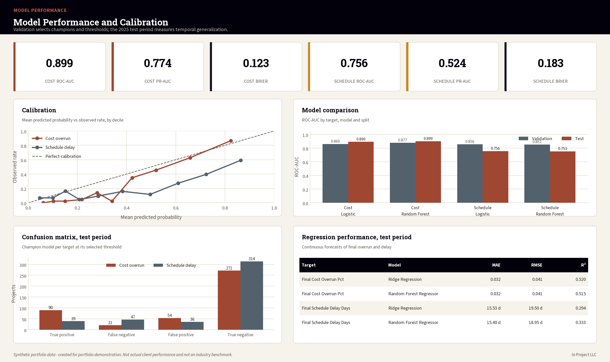

In Project LLC · Data-Driven Construction
Predict Project Risk Before the Outcome Is Final
A portfolio demonstration combining project controls, RFI and change workflows, machine learning, business intelligence, and responsible human oversight.
Potential applications
Portfolio screening
Prioritize projects for early review.
Recovery planning
Connect risk probabilities to project actions.
Controls monitoring
Track CPI, SPI, change exposure, RFIs, procurement, and workflow conditions.
Governed AI
Use human review, monitoring, and override controls.
Model evidence
The cost-overrun model achieved ROC-AUC 0.899 on a future synthetic test period. Schedule performance decreased to ROC-AUC 0.756, demonstrating why temporal monitoring is essential.
This demonstration is synthetic and is not an actual client deployment.
